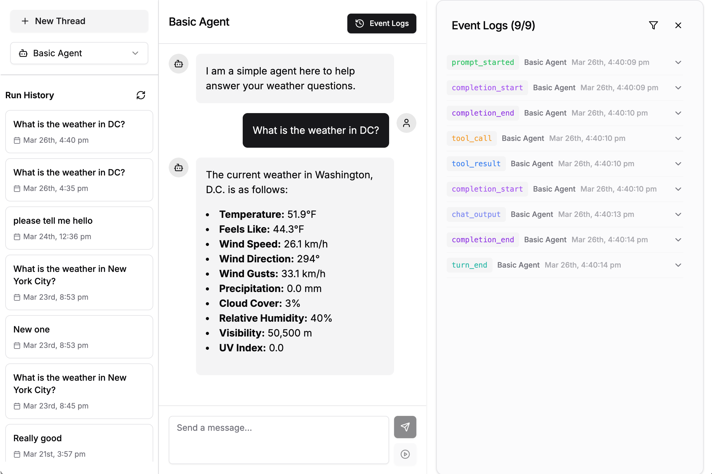

Next.js Dashboard
The Agentic Dashboard is a web-based interface for interacting with your agents, monitoring their activities, and reviewing their run history. Built with Next.js, it provides a modern, responsive UI that connects to your agents through the Agentic framework's REST API.

Overview
The dashboard offers the following features:
- Chat with any registered agent
- View real-time agent event logs
- Run agents in the background while continuing to use the interface
- Browse thread history to review past agent executions
- Monitor agent performance metrics
Setup and Installation
Prerequisites
The dashboard requires:
- Node.js (v18+)
- npm (v8+)
- The Agentic framework with the dashboard extras
To install with dashboard support:
pip install agentic-framework
Building the Dashboard
While not usually necessary, you can pre-build the dashboard for production:
agentic dashboard build
This compiles the Next.js application with optimizations for production use.
Running the Dashboard
There are two ways to run the dashboard:
Using the CLI
The simplest way to launch the dashboard is through the CLI:
# Start in production mode
agentic dashboard start
# Start in development mode with live reloading
agentic dashboard start --dev
# Specify a custom port
agentic dashboard start --port 8000
# Start an agent server alongside the dashboard
agentic dashboard start --agent-path examples/basic_agent.py
Programmatically
You can also start the dashboard from Python code:
from agentic.dashboard import setup
# Start the dashboard
process = setup.start_dashboard(port=3000, dev_mode=False)
# To stop the dashboard:
# process.terminate()
Architecture
The dashboard uses a client-server architecture:
- The Backend Server is your Agentic API server (started with
agentic serveoragentic dashboard start --agent-path <path>) - The Frontend Dashboard is the Next.js application that communicates with the backend
Backend Integration
The dashboard integrates with the Agentic framework's REST API endpoints:
/_discovery- Lists all available agents/<agent_path>/describe- Gets agent information/<agent_path>/process- Sends prompts to an agent/<agent_path>/getevents- Streams events from an agent/<agent_path>/threads- Gets thread history/<agent_path>/threads/{id}/logs- Gets logs for a specific thread
The API integration is implemented in src/app/lib/api.ts, which provides a client-side wrapper around these endpoints.
Component Structure
The dashboard is built with modular React components:
AgentChat- The main chat interface for interacting with agentsAgentSidebar- Navigation sidebar for agent selection and thead historyEventLogs- Real-time event log viewerBackgroundTasks- Background task managerThreadsTable- Table of historical agent threadsMarkdownRenderer- Renderer for agent markdown responses
Data Flow
Data flows through the application using the following pattern:
- The
useAgentDatahook fetches available agents and their information - The
useChathook manages chat interactions and event streaming - Components render the UI based on this data
- User actions trigger API calls which update the data
Event Streaming
A key feature of the dashboard is real-time event streaming from agents. This works through Server-Sent Events (SSE):
- When a user sends a prompt, the dashboard calls the
/processendpoint - It then connects to the
/geteventsendpoint with the request ID - The server streams events as they occur (chat output, tool calls, etc.)
- The client processes these events and updates the UI accordingly
The useChat hook encapsulates this logic, providing components with a clean interface for chat functionality.
Background Tasks
Agents can be run in the background while you continue using the interface:
- Enter a prompt and click the background task button
- The task runs independently of the main chat thread
- You can monitor its progress in the background tasks panel
- Results are stored and can be reviewed later
This feature is particularly useful for long-running tasks.
Development Mode
For dashboard development, use the --dev flag:
agentic dashboard start --dev
This launches Next.js in development mode with: - Hot module reloading - Detailed error messages - Source maps for debugging
Customization
The dashboard uses Tailwind CSS for styling and can be customized by modifying:
tailwind.config.tsfor theme settingsglobals.cssfor global styles- Component-level styles within each React component
Troubleshooting
Common issues and solutions:
- Dashboard fails to start: Ensure Node.js and npm are installed and up to date
- Cannot connect to agents: Make sure the Agentic server is running (
agentic serveoragentic dashboard start --agent-path <path>) - UI not updating after changes: Make sure you started the dashboard in development mode (
--dev)